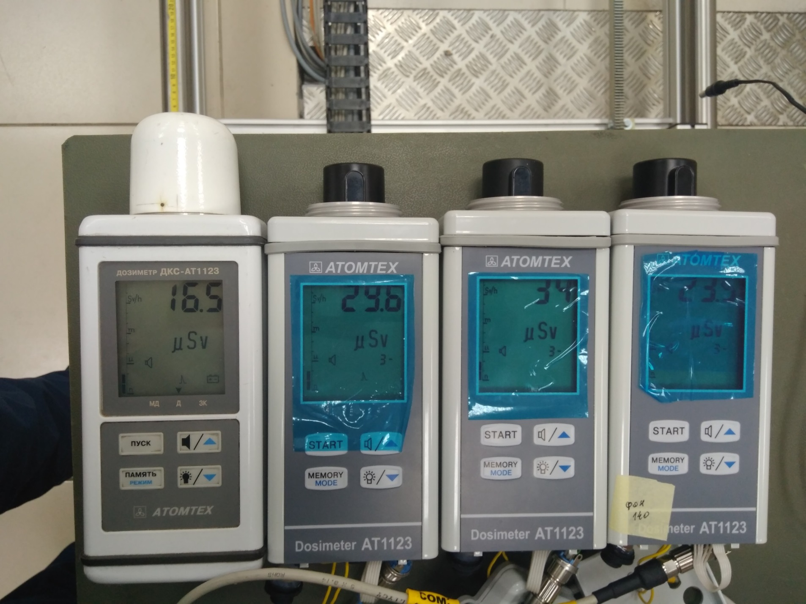
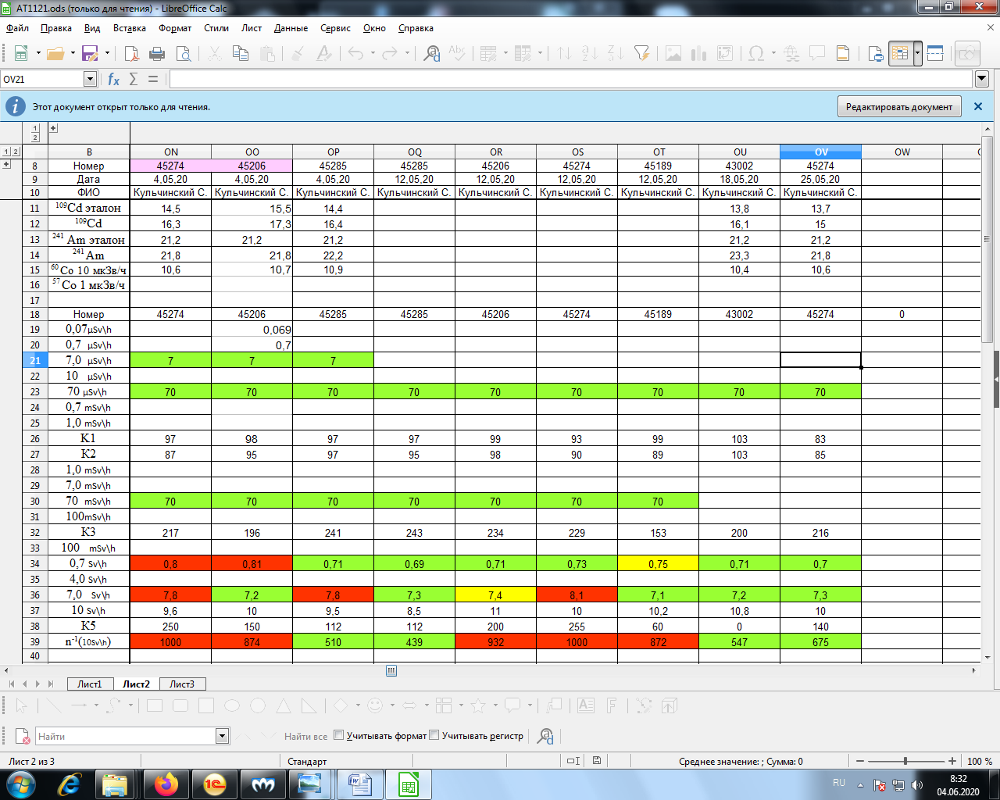
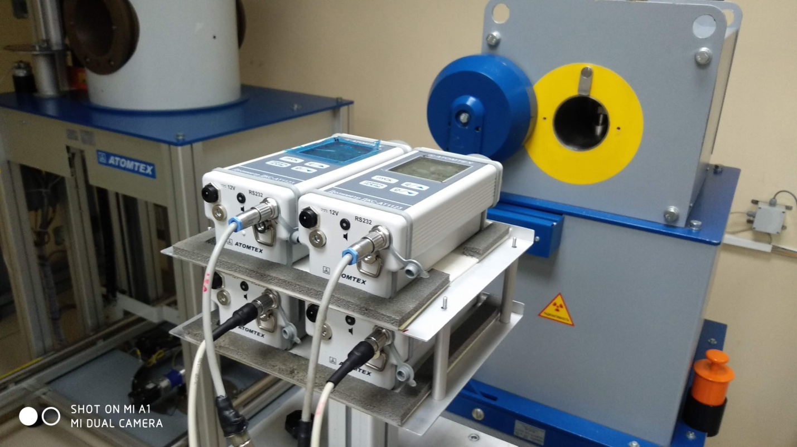

↑
Градуировка ДКС-АТ1121
- Установить 4-е дозиметра на УДГ-АТ110 таким образом, чтобы они расположились параллельно оси излучения, а
расстояние от источника до центра детектора равнялось -10 мм от края торца колпачка

- Подключить к ПК
- Запустить ПО 1121-1123
- Нажать Поиск
- Выбрать дозиметры
- Выбрать калибровка
- Выбрать точку 1 диапазона (7-700 мк)
- Нажать начать измерения
- Установить источник 137Cs 7 мкЗв/ч
- Градуировать показания выставив коэф 1U (д.б.≈100) с учётом фона 0,1 мкЗв/ч
- Снять показания по Cd 1м Am 1м 60Со 10 мкЗв/ч
- Снять точки 70 и 700 мкЗв/ч
- Данные переписать в журнал градуировки

- Установить дозиметры на УДГ-АТ130

- Повторить подключение как на 110
- Выбрать 2 диап(1-100м)
- Нажать начать измерения
- Установить источник 137Cs 100 мЗв/ч
- Градуировать показания выставив коэф 2U (д.б.≈100?)
- Снять точки 7 и 70 мЗв/ч
- Выбрать 3 диап(0,1-10 Зв)
- Нажать начать измерения
- Установить источник 137Cs 100 мЗв/ч
- Градуировать показания выставив коэф 3U (д.б.≈200?)
- Установить источник 137Cs 7 Зв/ч
- Градуировать показания выставив коэф 5U (д.б.≈50?)
- Снять точки 700 мЗв и 10 Зв/ч
- Данные переписать в журнал градуировки